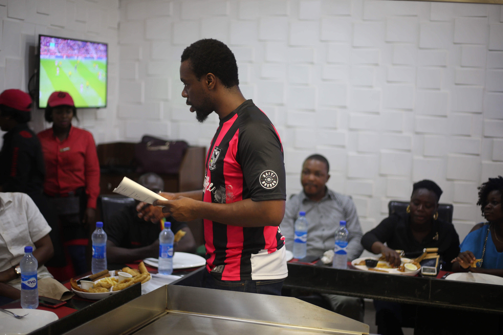
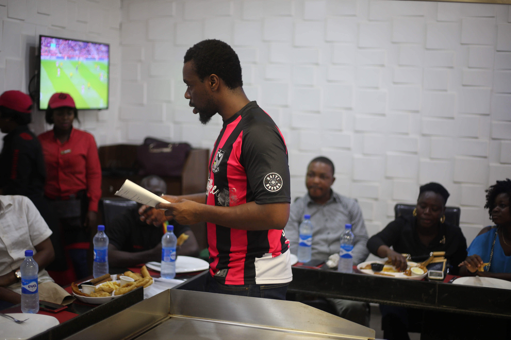

overview
Lagos traffic is so clogged and gridlocked that a trip of 30 kilometers can take commuters up to eight hours. Here, roads are always at capactiy and millions of Lagosians are stressed and frustrated about the daily hassle in the city. The average Lagosian can spend anywhere from 2 - 8 hours per day in traffic. Taking an immense toll on their mental health, in addition to an incredible amount of time lost for each individual.
Gokada is Nigeria's first motorcycle ride-hailing service, allowing Lagosians to order bikes on the website, through the app, or by hailing a rider. As the Chief Product Officer, I lead the design and development of internal and customer facing digital tools and experiences. In addition to setting the vision and strategy for future Gokada products and services. In order to create viable solutions, I organized field research, customer interviews, and focus groups, with the aim of transforming customer needs into experiences.
Gokada riders travel an average of 26km/hr whereas cars in the same traffic travel at an average of 13km/hr. Gokada has proven to get Lagosians to their destination 50% faster than the average vehicle. Gokada ends up saving Lagosians money and time, and in the long run, reduces immense mental stress built up during and after sitting in traffic for hours.
product
research

 

projects
Cigna
An intuitive healthcare experience for healthcare customers suffering from chronic back pain, providing contextual guidance and anticipating their needs.FedEx
A simpler and easier way for First-Overnight couriers to scan and successfully deliver packages to customers.Gokada
Transforming the way Nigerians navigate traffic in Lagos by providing a safe, fast, and alternative method of transportation.Nike
Software solutions for the Nike Sports Researcher Lab focusing on data collection, data management, and data visualization of elite athletes.SiriusLabs
Providing thoughtful and tailored software solutions for our business partners: reducing their risk and costs, while increasing their revenue.